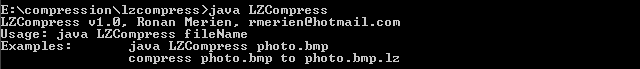

The compression used a combination of the LZSS algorithm, Huffman coding and word references from a static dictionnary.
The LZSS algorithm may use a reference to a duplicated string (256 bytes max) occurring in a previous block, up to 64K input bytes before.
The compressed data consists of a series of elements of two types: literal bytes (of strings that have not been detected
as duplicated within the previous input bytes), and pointers to duplicated strings, where a pointer is represented as a pair
Each type of value (literals, distances, and lengths) in the compressed data is represented using a Huffman code, using one code tree for literals and lengths and a separate code tree for distances.
The code trees appear in a compact form just before the compressed data.
static int INDEX_BIT_COUNT = 16; static int LENGTH_BIT_COUNT = 8; static int WINDOW_SIZE = ( 1 << INDEX_BIT_COUNT); // Window (saved as a tree representation) of 65536 bytes static int LOOK_AHEAD_SIZE = ( 1 << LENGTH_BIT_COUNT); // Input buffer length of 256 bytes static int BREAK_EVEN = 3;